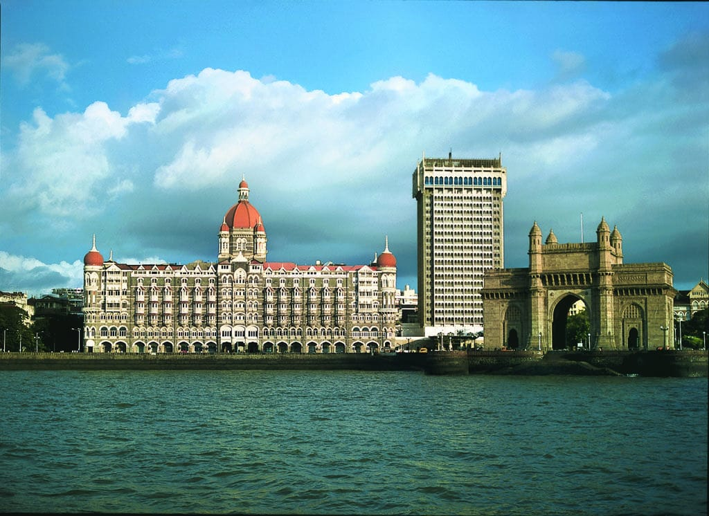

SOME FAMOUS STREET FOODS OF MUMBAIKERS
Vada pav
Misal Pav
Pav bhaji
And many other veg and non-weg dishes.
HERE U WILL SEE BOTH VEG AND NON-VEG CUISINES .BOTH ARE FAMOUS HERE.
IN MUMBAI YOU WILL GET ALL CASTE AND RELIGIONS PEOPLES TOGETHER.
HOMEPAGE